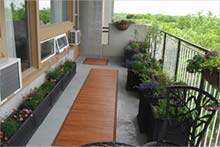
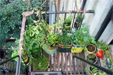
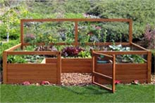
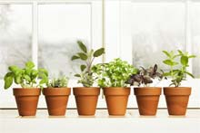
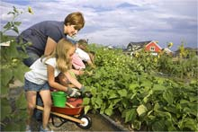
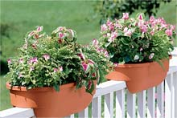
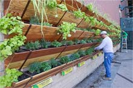
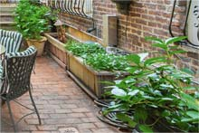

Step 1: Choose a Location
There are a lot of options when deciding where to plant your urban garden, but the number one most important thing you need to consider is a location that gets at least eight hours of sunlight to grow fruits and veggies, although there are other plants that will do well in less light.
Locations to Consider
- 
Balcony or patio. You can line them up nicely on both sides allowing for a walkway down the middle.
- 
Fire escape. You can fit a few containers on the landing, but be sure to leave plenty of space for a footpath.
- 
Front or back yard. If you have any front or backyard space that you own, you can go ahead and plant your garden right in the prepared soil. If that’s not an option, you could plant your garden in containers and set them outside.
- 
Windowsill. This is a great location to grow shallow rooted herbs and vegetables. Like the vertical planters they do need to be secured to the structure.
- 
Community Garden. Many cities will have a space for a community garden. Some have a cost and some are free, but you won’t have to worry about watering.
- 
Railing. Planters for railings are readily available. There are also numerous DIY resources for building your own railing planters.
- 
Wall. There are plenty of vertical garden planters out there right now. The thing with most of them is that you need to secure them to the walls, which might be an issue for some renters or landlords. Never hurts to ask, though.
- 
Side of a building. Often this is dead space that isn’t visible from anywhere and not being used. It is worth inquiring to find out if you can put containers out there to start your garden.